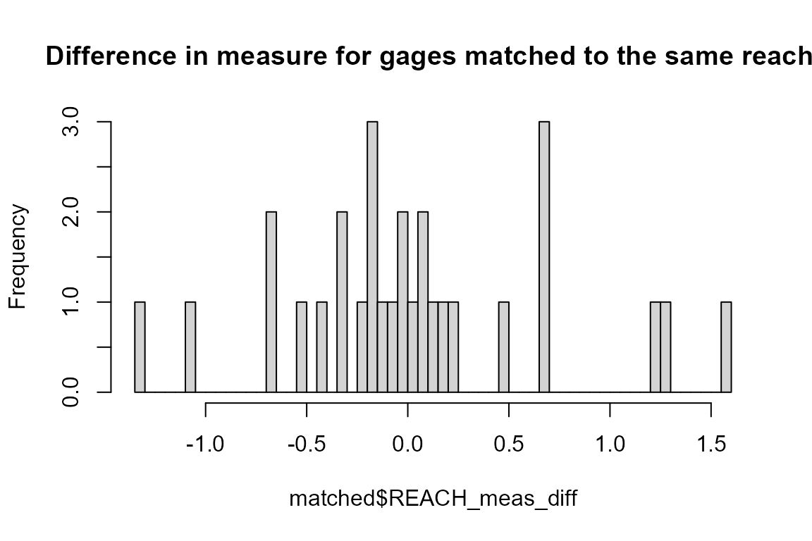

NHDPlus Point Indexing
First we’ll load up some data. In this case, we use flowlines from the NHDPlus subset that’s included in the package and a set of points to index. We’ll use the NHDPlus Gages layer for this example. The data in this example is big. The R session needs a lot of memory to hold the whole NHDPlus flowline layer and run the calculations.
library(nhdplusTools)
#> USGS Support Package: https://owi.usgs.gov/R/packages.html#support
nhdplus_path("data_dir/natseamless.gpkg")
flowlines <- sf::read_sf(nhdplus_path(), "NHDFlowline_Network")
gages <- sf::read_sf(nhdplus_path(), "Gage")Now we can call nhdplusTools::get_flowline_index() on the data we just loaded. Note that we are doing our spatial searching in units of degrees. The get_flowline_index has an input, search_radius which defaults to 0.1. See the documentation of the nn2 function from the RANN package for more information on how the search works.
geom_col <- attr(gages, "sf_column")
indexes <- get_flowline_index(flowlines, gages[[geom_col]], search_radius = 0.1)Now let’s look at the results and see how the nhdplusTools::get_flowline_index() did. The below shows the percent of COMIDs and REACHCODEs that match and shows a histogram of the measure differences for the REACHCODES that were matched.
p_match <- 100 * length(which(indexes$COMID %in% gages$FLComID)) / nrow(gages)
paste0(round(p_match, digits = 1),
"% were found to match the COMID in the NHDPlus gages layer")
#> [1] "69.6% were found to match the COMID in the NHDPlus gages layer"
p_match <- 100 * length(which(indexes$REACHCODE %in% gages$REACHCODE)) / nrow(gages)
paste0(round(p_match, digits = 1),
"% were found to match the REACHCODE in the NHDPlus gages layer")
#> [1] "71.7% were found to match the REACHCODE in the NHDPlus gages layer"
matched <- cbind(indexes,
dplyr::select(sf::st_set_geometry(gages, NULL),
REACHCODE_ref = REACHCODE,
COMID_ref = FLComID,
REACH_meas_ref = Measure)) %>%
dplyr::filter(REACHCODE == REACHCODE_ref) %>%
dplyr::mutate(REACH_meas_diff = REACH_meas - REACH_meas_ref)
hist(matched$REACH_meas_diff, breaks = 100,
main = "Difference in measure for gages matched to the same reach.")
round(quantile(matched$REACH_meas_diff,
probs = c(0, 0.1, 0.25, 0.5, 0.75, 0.9, 1)),
digits = 2)
#> 0% 10% 25% 50% 75% 90% 100%
#> -5.11 -1.40 -0.52 0.36 1.57 8.11 30.74The above example used the native nodes of the NHDPlus as the potential measure snap locations. The nhdplusTools::get_flowline_index() function has the ability to refine these by segmentizing the line to some given resolution. Let’s try the same thing using a resolution of 10m and see if we can do any better.
Note that the sf::st_segmentize function takes care of the distance conversion and segmentizes our lon/lat lines to 10m on the fly.
indexes <- get_flowline_index(flowlines,
gages[[geom_col]],
search_radius = 0.1,
precision = 10)
#> Linking to GEOS 3.6.1, GDAL 2.1.3, proj.4 4.9.3Now lets look at out comparison again.
p_match <- 100 * length(which(indexes$COMID %in% gages$FLComID)) / nrow(gages)
paste0(round(p_match, digits = 1),
"% were found to match the COMID in the NHDPlus gages layer")
#> [1] "69.6% were found to match the COMID in the NHDPlus gages layer"
p_match <- 100 * length(which(indexes$REACHCODE %in% gages$REACHCODE)) / nrow(gages)
paste0(round(p_match, digits = 1),
"% were found to match the REACHCODE in the NHDPlus gages layer")
#> [1] "71.7% were found to match the REACHCODE in the NHDPlus gages layer"
matched <- cbind(indexes,
dplyr::select(sf::st_set_geometry(gages, NULL),
REACHCODE_ref = REACHCODE,
COMID_ref = FLComID,
REACH_meas_ref = Measure)) %>%
dplyr::filter(REACHCODE == REACHCODE_ref) %>%
dplyr::mutate(REACH_meas_diff = REACH_meas - REACH_meas_ref)
hist(matched$REACH_meas_diff, breaks = 100,
main = "Difference in measure for gages matched to the same reach.")